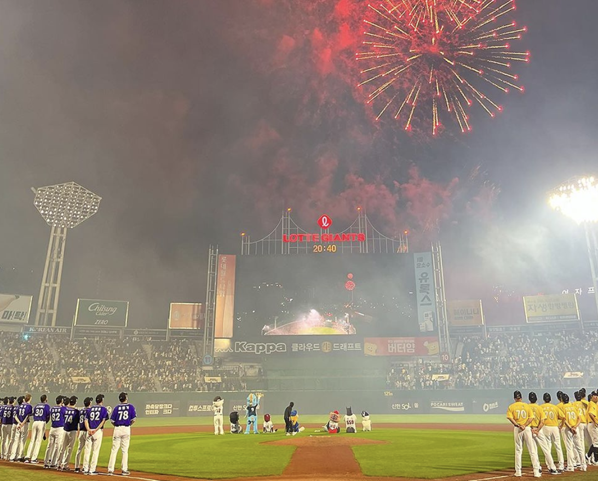

Author: Andrew Jang
Published on: July 21, 2023
The All-Star Game returned to Sajik Baseball Stadium for the first time in 16 years and did not disappoint. As always, the All-Star Game was filled with amazing performances in and out of the batter's box. Whether it was Kim Min-Suk's BlackPink Jennie Impression or Socrates Brito's three-run shot, the players gave the fans everything they could have wanted.
I was lucky enough to attend the All-Star Game and see what makes this annual event so special. Outside of the stadium, there were multiple booths set up by brands and companies to give away free merchandise during “events”. For answering a quiz event, I received a cheer towel, baseball, and face paint sticker. Shinhan Bank was also sponsoring a pinball game, in which I won a baseball with the logo of the bank. Even outside of the stadium, there are lots of free services for fans which enhanced my experience. Moreover, the Lotte Giants Shops were changed to sell 2023 All-Star Gear for both the Dream and Nanum teams. I was planning on getting a Kiwoom Heroes Hat as instead of the usual red and blue color scheme for the Nanum and Dream All-Stars, respectively, the KBO opted for a purple and yellow color scheme. However, the Kiwoom and Hanhwa hats were completely sold out by the time I got there. But, if you are looking for All-Star Gear you can find it on the KBO Market in the link below.
Link to 2023 All-Star Gear!The game itself was entertaining from the start to the finish. To start the game, Samsung Outfielder Koo Ja-Wook gave us his best NewJeans impression by wearing a wig and even applying foundation to his face. The impact of the song Narco has been seen in the Major Leagues as used by Edwin Diaz's electric entrance song. In the KBO, it was no different as fans clamored at the sight of Socrates Brito's entrance playing the trumpet to Narco. Brito's performance is a nod to his cheer song as the original backing track is Donny Trumpet's Narco. To top it off, Brito hit a three-run home run to give the Nanum team the lead. However, the real showstopper was Kim Min-Suk’s Jennie Impression. The Lotte Outfielder came out with the Giants Mascot to dance to Jennie's SOLO which literally made fans speechless.
Besides these entertaining performances, the most impressive feat was achieved by Hanhwa's Chae Eun-Sung. In the 41 years of the KBO, Chae was the second player to ever hit a grand slam during the game and the first to do so since the inaugural game. In addition to that, he also made history by winning the All-Star-Game MVP and being the “Homerun King”, a title given to the winner of the home run derby.
Overall, the game was very fun and a great example of why the KBO provides a great experience for the fans! To see more highlights of the game, check out the official youtube channels of the KBO and the teams.
KBO 2023 All-Star Highlights!